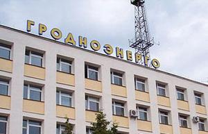

Новости
СК рассказал подробности июньского ЧП на подстанции «Гродноэнерго» в Гоже и назвал предполагаемого виновника
В июне этого года на подстанции РУП «Гродноэнерго» в Гоже произошло частичное разрушение пристройки синхронного компенсатора, были пострадавшие. Как стало известно, в отношении инженера данной подстанции возбуждено уголовное дело, который не обеспечил безопасность взрывоопасных работ на объекте.
В «Гродноэнерго» новый гендиректор — кто он такой
С 1 сентября гродненское республиканское унитарное предприятие электроэнергетики «Гродноэнерго» возглавляет Виктор Жук.
«Я никогда не требовал деньги…»: начался суд над заместителем гендиректора РУП «Гродноэнерго»
Начался суд над заместителем генерального директора РУП «Гродноэнерго», который обвиняется в получении взятки в крупном размере и разглашении служебной тайны. Первое судебное заседание прошло в зале суда Гродненского района в понедельник, 21 мая.

Госконтроль: у «Гродноэнерго» есть резерв для экономии 100 тысяч долларов
Гродноэнерго» может дополнительно сэкономить на топливе порядка 100 тысяч долларов. Об этом было сказано во время коллегии Комитета госконтроля, которая состоялась в Минске в понедельник, 24 сентября.
Заместителя гендиректора «Гродноэнерго» будут судить за взятки
Заместителя гендиректора «Гродноэнерго» обвиняют в получении взятки в сумме почти 14 тысяч рублей. Уголовное дело направлено для рассмотрения в суд.
На подстанции в Гоже произошло разрушение пристройки — есть пострадавшие (официальный комментарий «Гродноэнерго»)
Инцидент произошел в четверг, 11 июня, около 14 часов дня на одной из подстанций в Гоже, относящейся к РУП «Гродноэнерго». 6 человек направлены в медицинское учреждение для проведения обследования.
Деревня невезения: в Чещевлянах под Гродно перебои с электричеством и нет нормальной дороги — что им отвечают власти?
Чещевляны находятся в нескольких километрах от Гродно, здесь около 90 домов. Но в деревне живут без нормального света и хорошей дороги. Действующие электросети не выдерживают нагрузки, а газ подведут ещё нескоро.